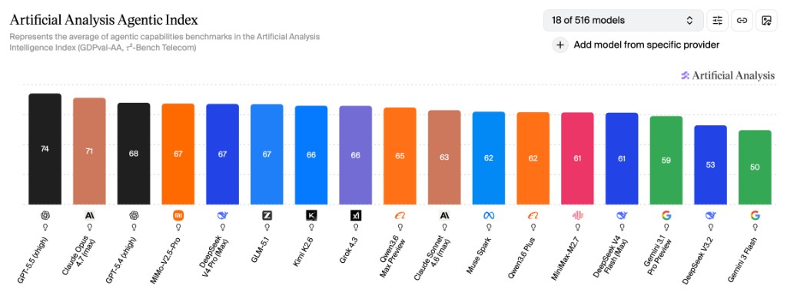
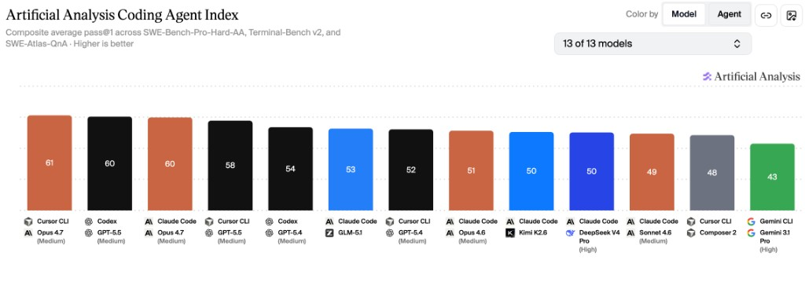

评测摘录 · OpenClaw
国产大模型核心能力评测：智谱、DeepSeek、MiniMax、Kimi、千问 Qwen、小米 MiMo
更新日期：
基于独立评测机构 Artificial Analysis 发布的最新 AI 模型基准测试结果，本文围绕 Agentic 智能指数 与 Coding Agent 指数 两大核心维度展开横向对比。这两项指标与日常代码开发需求和 OpenClaw、Harness 等通用 Agent 场景高度契合：
- Agentic 能力直接决定模型自主规划复杂任务、调度外部工具、驱动自动化流程的水平
- Coding Agent 能力则是评估模型代码生成、调试优化、代码库理解效率的核心依据。
从测试数据来看，国产头部大模型已全面跻身全球第一梯队，与 OpenAI、Anthropic 等海外厂商的顶尖产品差距显著缩小，且在性价比、国内生态适配性方面具备独特优势。
一、整体格局：国产第一梯队全面对标海外顶尖水平
1. Agentic 智能指数（通用 Agent 核心指标）

该指数综合 GDPval-AA 真实世界任务执行能力与 τ²-Bench Telecom 工具调用能力两大基准，量化评估模型自主完成多步骤复杂任务的表现，是衡量 OpenClaw 自动化运营潜力的核心标准。
- 全球头部阵营：GPT-5.5（74 分）、Claude Opus 4.7（71 分）占据前二
- 国产第一梯队（65 分及以上）：MiMo-V2.5-Pro、DeepSeek V4 Pro (Max)、GLM-5.1 以 67 分并列全球第四，Kimi K2.6（66 分）、Qwen3.6 Max Preview（65 分） 紧随其后，与 GPT-5.4 的差距仅为 1–3 分。超过 Claude Sonnect 4.6。
- 国产第二梯队：Qwen3.6 Plus（62 分）、MiniMax-M2.7（61 分）、DeepSeek V4 Flash (Max)（61 分）。与 Claude Sonnect 4.6 基本持平。
2. Coding Agent 指数（代码核心指标）

该指数整合 SWE-Bench-Pro-Hard-AA 代码生成修复、Terminal-Bench v2 终端工具使用、SWE-Atlas-QnA 代码库理解三大测试维度，全面评估模型端到端完成软件工程任务的能力。
- 全球头部阵营：Cursor CLI Opus 4.7（61 分）、Codex GPT-5.5（60 分）、Claude Code Opus 4.7（60 分）位列前三
- 国产第一梯队：GLM-5.1 以 53 分排名全球第五，为国产模型首位。与 GPT-5.4 和 Opus 4.6 基本持平。
- 国产第二梯队：Kimi K2.6、DeepSeek V4 Pro (High) 以 50 分并列全球第七
- 注：本次编码代理指数共评测 13 款模型/代理组合，MiniMax、Qwen、MiMo 对应版本未纳入本次评测范围。待 Artificial Analysis 更新评测结果后，将更新本文。
二、国产核心厂商模型深度解析
1. GLM-5.1（智谱AI）：编码能力领跑国产，综合实力均衡
作为国产编码能力的标杆，GLM-5.1 在 Claude Code 框架下的代码生成、漏洞修复及大型代码库解读能力均领先其他国产模型，是技术开发场景的首选方案。其 Agentic 智能指数同样达到国产顶尖水平，能够同时支撑 OpenClaw 复杂流程的自主调度与底层工具的开发搭建。定价处于行业中等偏上水平，但如果能够购买 CodingPlan 个人使用，则依然划算，综合适配运营与开发双重核心需求。
缺点是算力瓶颈比较严重，CodingPlan 需要抢购，很难买到。
2. MiniMax-M2.7（稀宇科技）：低幻觉高可靠，响应效率优异
MiniMax-M2.7 的核心优势模型参数量比其他模型小，使得 CodingPlan 套餐最实惠、额度限制最小、倍率最高的。极速版套餐模型输出 Token 速率高，很少出现 429，可用性高于其他平台套餐。日常交互体验出色，适合作为 OpenClaw 等 Agent 场景中完成日常任务，作为辅助工具承担日常信息汇总、流程记录、常规咨询答疑等标准化任务。
3. DeepSeek（深度求索）：全梯度产品线覆盖，兼顾性能与成本
DeepSeek 构建了完整的产品矩阵，能够满足不同层级的需求。旗舰款 V4 Pro (Max) 综合能力均衡，Agentic 与编码能力均处于国产第一梯队，可胜任代码开发工作及 OpenClaw 核心复杂任务与调度；轻量款 V4 Flash (Max) 输出速度高达 75 tokens/s，成本极低，适合高并发、低延迟的常规任务调度。
同时由于 DeepSeek 独特的缓存技术，使得缓存命中率高，缓存价格低，按用量计费首选。
4. Kimi K2.6（月之暗面）：长上下文能力突出，编码功底扎实
Kimi K2.6 能力均衡，支持图像输入，模型代码能力优，较高强度的日常开发够用。购买 CodingPlan 送专属龙虾。Allegretto ￥199/月性价比高最高，适合作为代码开发场景主力使用。
5. Qwen（通义千问，阿里）：企业级生态完善，定制化能力强
Qwen3.6 Max Preview 的 Agentic 表现优秀，指令遵循能力与多场景适配性突出。性价比款 Qwen3.6 Plus 则进一步降低了使用门槛，适合大规模日常应用。但目前只剩下 Token Plan 套餐，性价比较低，个人使用不推荐。
6. MiMo-V2.5-Pro（小米）：Agentic 能力国产顶尖，性价比优势显著
MiMo-V2.5-Pro 的 Agentic 智能指数与 DeepSeek V4 Pro、GLM-5.1 并列国产第一，在多工具协同调度、复杂自主流程执行方面表现接近 GPT-5.4，是驱动 OpenClaw 全流程自动化的最优选择之一。
三、个人使用选型参考指南
结合代码开发需求及 OpenClaw 场景，可根据具体场景针对性选择：
- 复杂代码开发与生产级系统搭建：首选 GLM-5.1，其编码能力全面领先；Kimi K2.6 与 DeepSeek V4 Pro 可作为备选，满足常规开发与调试需求。
- OpenClaw 核心与复杂任务：优先选择 GLM-5.1、DeepSeek V4 Pro、Kimi K2.6，三者 Agentic 能力均处于国产顶尖水平，能稳定支撑多工具协同与自主流程执行。
- OpenClaw 日常任务：优先选择 MiniMax-M2.7 和 DeepSeek V4 Flash，其流畅的响应和高用量限制，能够满足标准化的日常助力需求。
- 其他专业需求综合：MiniMax-M2.7 是理想选择，便宜的价格和全天候流畅的响应在使用感受上最好。
- 日常聊天：其实推荐直接用豆包、千问，没必要自己搭建。
图表站点：Artificial Analysis。与上文截图完全一致的原始筛选链接：Agentic Index · Coding Agents。